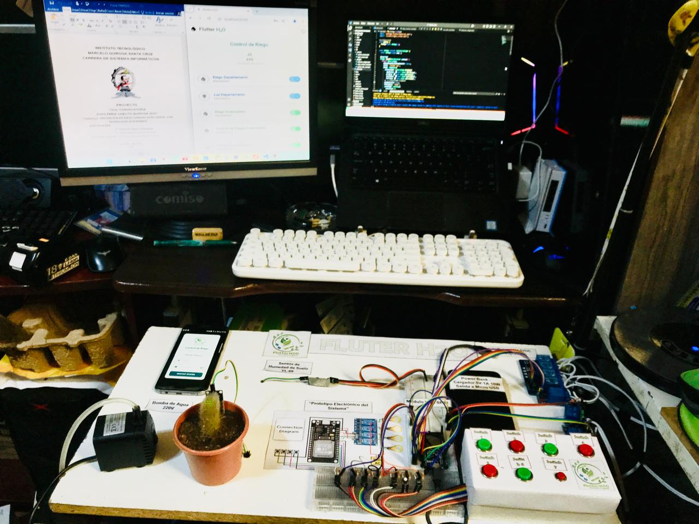
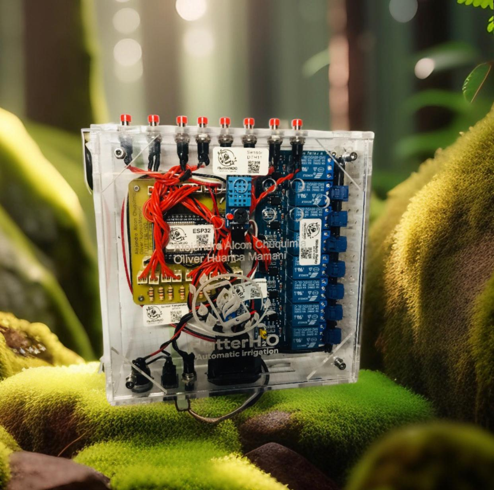

Misión
Desarrollar soluciones tecnológicas que ayuden a utilizar mejor el agua mediante sistemas de riego inteligente.
Sistema de riego urbano inteligente
FlutterH2O es un sistema que permite controlar el riego de plantas mediante sensores y una aplicación móvil.
Desarrollar soluciones tecnológicas que ayuden a utilizar mejor el agua mediante sistemas de riego inteligente.
Ser una propuesta tecnológica accesible para mejorar el cuidado de áreas verdes y cultivos urbanos.
Permiten conocer cuándo una planta necesita agua.
El sistema activa el riego cuando es necesario.
Permite controlar el sistema desde un teléfono celular.
Permite conectar el sistema de riego con dispositivos móviles para realizar un control de manera remota.
Ayuda a tomar decisiones de riego de acuerdo con las condiciones del clima y las necesidades de las plantas.
Brinda orientación y asistencia para el uso y funcionamiento del sistema FlutterH2O.
Para asistencia puedes comunicarte al 73265463.
Se brinda orientación y apoyo técnico para resolver dudas relacionadas con el funcionamiento del sistema.
Correo: flutterh2o.HM@gmail.com


FlutterH2O busca contribuir al cuidado de las áreas verdes, reducir el desperdicio de agua y acercar la automatización a más personas.
El proyecto también puede servir como apoyo para aprender sobre electrónica, programación, automatización e Internet de las Cosas.
Mediante una aplicación móvil se puede controlar y monitorear el sistema de riego desde cualquier lugar.
FlutterH2O se encuentra en la ciudad de La Paz, Bolivia.
Zona P.D. Murillo, Calle Macario Pinilla N° 0925